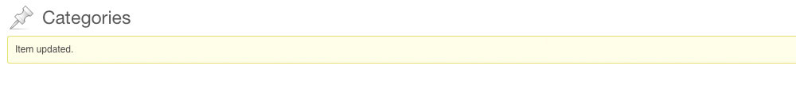

Created: 16/09/2013
By: Marten Timan, Atypisch webdesign & webdevelopment
Email: marten@atypisch.nl
Thank you for purchasing my plugin. If you have any questions that are beyond the scope of this help file, please feel free to email via my user page contact form here. Thanks so much!
Just copy this plugin (the entire 'category-colors' folder) into your Wordpress plugins directory. Then go to your plugin section in the Wordpress CMS and click 'Activate'.
To call the color from witin your template you need to retrieve the Category ID first. In your template use this code within the loop:
<?php
$category = get_the_category();
$the_category_id = $category[0]->cat_ID;
?>
There is a more extensive explanation below in the PHP Code explanation section. Now you call the Category Colors function and use the Category variable to retrieve the Category Color.
<?php
if(function_exists('cc_get_color')) {
$category_color = cc_get_color($the_category_id);
}
?>
Use the output color as a background, to color your fonts, lines or anything you want. In the code example below we add the output to an inline CSS rule like so: style="color: #<?php echo $category_color; ?>;" You can use the variable <?php $category_color; ?> anywhere in your template file after you ran the function.
Now you can spice up your Posts and Categories with your own custom colors, have fun!
After the plugin is installed and activated it will add two items to your Wordpress CMS.
1) In the Edit section of your Post Categories a new field is added labeled 'Choose your Category Color',
showing the current color set to your Category. You cannot choose a color directly when creating a category because we want to keep creating categories sweet and simple :-)
Click on the textfield for the jQuery Colorpicker to appear. The screenshot below shows an example.
After you have clicked the update button, your Category Color is updated. You will be taken to the Category overview section and will see this message:
2) in Settings -> Category Colors you can change the default Category Color and will also see some information about the plugin.
For a more detailed description of how this functionality works check the PDF in the documentation section of this plugin, or look online at the plugin page.
Functions
The plugin consists of one simple PHP file ('cc-index.php') which contains all the necessary PHP functions and includes for this plugin. These are the functions briefly explained;
/* === Database functions === */ cc_check($the_cat_id, $cat_color); Checks if a value exists. If so it will run the cc_update_db() function, if not is will run the cc_write_db() function. cc_write_db($the_cat_id,$cat_color); Writes a color value and a category Id value to the database. cc_update_db($the_cat_id,$cat_color); Updates category color value $cat_color to an existing category id. cc_get_color($the_cat_id); Main color function; returns the category color from a category id cc_createtable(); if table does not exists it will create a databse table 'category colors' /* === Plugin functions === */ cc_add_page(); adds Wordpress functionality; adds scripts, option page and create table function cc_add_picker(); adds the jQuery colorpicker forms and gets default color cc_options_page(); adds the Category Colors options page under settings -> Category Colors cc_admin_head(); Enqueues the CSS and jQuery scripts in the heading of the page
Structure
This is the basic structure of the plugin and the containing files, starting from the plugin folder 'category-colors'.
Please do not edit or extend these functions.
This theme imports several Javascript files including a minified jQuery library (v1.9.1), all part of the jQuery Colorpicker Plugin.
jQuery(document).ready( function($) {
$("div.postbox h3").click(function () { $(this).parent(".postbox").toggleClass("closed"); });
});
This plugin (Category Colors) comes with a standard PHP function you can use within your Wordpress Templates. This function is called <?php cc_get_color( $the_category_id ); ?>, where $the_category_id is obviously the Category ID,
and the output is the color you have given it through the plugin. This output is a Hex Color code consisting of 6 figures (I.E. #000000, #35ff00, #e3e4e5, etc). You can use this code in your CSS in combination with a '#' to show your color.
To call the color from witin your template you need to retrieve the Category ID first.
There are several ways to get it.
You can get the Category ID by Category Name like so: <?php get_cat_ID( $cat_name ); ?> (more info online here ).
You can also retrieve the Category ID through an Array. In your template use this code within the loop:
<?php
$category = get_the_category();
$the_category_id = $category[0]->cat_ID;
?>
Note that you now only retrieve the first given Category in the variable $the_category_id. To retrieve multiple Category IDs just add more variables. For instance,
$the_category_id2 = $category[1]->cat_ID; $the_category_id3 = $category[2]->cat_ID; etc. More info online here.
Now you call the Category Colors function and use the Category variable to retrieve the Category Color.
<?php
if(function_exists('cc_get_color')) {
$category_color = cc_get_color($the_category_id);
}
?>
Use the output color as a background, to color your fonts, lines or anything you want. In the code example below we add the output to an inline CSS rule like so:
style="color: #<?php echo $category_color; ?>;"
type: Wordpress Plugin
languages: PHP, HTML, CSS, MySQL and jQuery javascript, and Colorpicker library
version nr: 1.1
release date: 16/09/2013
This plugin is compatible with all newer versions of Wordpress, tested up to Wordpress version 3.6.1
Plugin documentation URL: http://www.atypisch.nl/plugins/category-colors/
This plugin is entirely written by Marten Timan, owner and founder of Atypisch Webdesign & Webdevelopment currently based in Utrecht, The Netherlands.
Please feel free to make a donation to stimulate further development of this or other plugins.
Once again, thank you so much for purchasing this plugin. As I said at the beginning, I'd be glad to help you if you have any questions relating to this theme. No guarantees, but I'll do my best to assist. If you have a more general question relating to the plugins on CodeCanyon, you might consider visiting the forums and asking your question in the "Item Discussion" section.
Marten Timan
Atypisch webdesign & webdevelopment